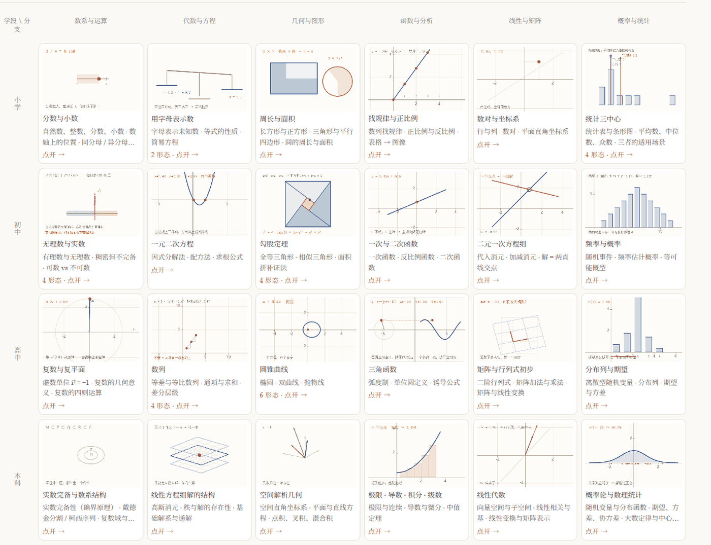

一张按先修关系排出来的数学地图——从数数到概型。 A prerequisite graph of mathematics — from counting to schemes.
现在的数学资源大多按年级、按字母、按主题排。这张图按依赖关系排：什么必须在什么之前，什么可以跳过。 Most math resources are organised as lists — by grade, by alphabet, by topic. This one is organised by dependency: what must come before what, and what can be skipped.

166 格，四个学段，六条主线。其中 146 格点开是可以拖着动的图。 166 cells, four stages, six strands. 146 of them open into a visual you can drag.
全部是单文件 HTML。不构建、不联网、不追踪，离线能开。 All single-file HTML. No build, no CDN, no tracking. Works offline.
Math Map
一屏看完整个版图。十一种切法：课程序、结构序、算子序、几何序、群论序、物理序、数系、历史。166 格里 146 格点开是能动的图。 The whole territory in one view. Eleven ways to slice it: course order, structure (degree × variables), operators, geometry, group theory, physics, number systems, history. 146 of the 166 open into a visual you can drag.
24 格 · 124 知识点 · 166 条目24 cells · 124 points · 166 entriesVariations
一个式子的所有等价变形，对复合封闭。13 个等价算子作用在 192 个母式上，外加 66 条算子链和 51 种命名错法，供诊断用。 Every algebraic transformation, closed under composition. Thirteen equivalence operators applied to 192 seed forms — plus 66 operator chains and 51 named error patterns for diagnosis.
1814 个具体形态1814 concrete variantsFitting Lab
手画一条曲线，反解出所有能描述它的数学语言——圆锥曲线、极坐标、贝塞尔、NURBS、傅里叶、切比雪夫、样条、RBF、符号回归——按简约度排，不只看拟合。 Draw a curve by hand. Get back every mathematical language that can describe it — conic, polar, Bézier, NURBS, Fourier, Chebyshev, spline, RBF, symbolic regression — ranked by parsimony, not just fit.
35 个表达族 · 按 误差 × 简约度 排序35 families · ranked by error × parsimonyDiagnose
十二道题，定位你到底卡在哪一格。会 B 而 B 依赖 A，就一定会 A——两条推断规则把 2²⁴ 种可能压成十几道题。 Twelve questions to locate which cell you are actually stuck in. If you can do B and B requires A, then you can do A — two inference rules collapse 224 possibilities into a handful of questions.
124 题 · 约 12 问124 items · ~12 questions四个工具页目前都是中文。英文版正在做，先做 24 个核心课程格：结构、连边、定义都不动，只换语言，术语以 Stewart、Strang、Axler、Rudin、Durrett 为准，不按中文字面直译。 The four tools are written in Chinese. An English edition of the 24 core cells is in progress: same structure, same edges, same definitions, translated against Stewart, Strang, Axler, Rudin and Durrett rather than against a translated glossary.
结构是论证出来的，不是爬来的。每一条先修连边都先问一句「学生能不能不懂 A 就学会 B」，再由另一个人复核。复核后发现三格其实是并列而非先后，还有一条边的方向被改了过来。这些判断本身就是内容。 The structure is argued, not scraped. Every prerequisite edge was decided by asking "can a student learn B without A?" — then checked by an independent reviewer. Three cells turned out to be parallel rather than sequential; one edge was reversed after review. That judgement is the actual content here.
画不出来的，就不画。数论在这张表里是故意缺席的。类群和 étale 上同调没有图形。硬塞进「次数 × 维数」的格子是不诚实的，所以图里直接说明，而不是拿空格充数。 It refuses to draw what cannot be drawn. Number theory is deliberately absent as a matrix. Class groups and étale cohomology have no picture. Forcing them into a grid of "degree × dimension" would be dishonest, so the map says so instead of padding cells.